Men's Dress Shoes
I started out with dance shoes but soon discovered men's dress shoes to be the highest form of art and craft. My shoes are made with the finest leathers using traditional methods of craftsmanship.
Many of the fine qualities are in the construction, where they are not readily apparent. For example: highly absorbent vegatable tanned insoles, vegetable tanned liners, hand stitched inseams and soles. These shoes are made to last 20 years, with proper care.
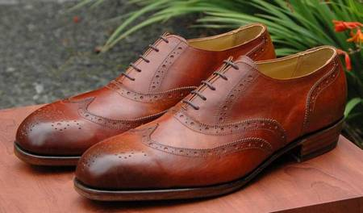
Hand Dyed, McKay Stitched, Full Brogue Oxfords

Alligator and Cordovan
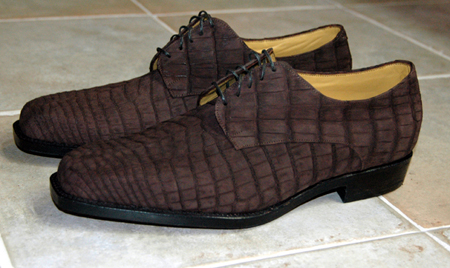
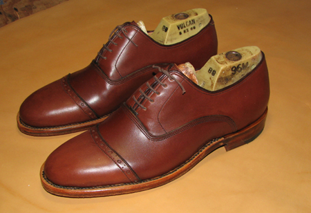
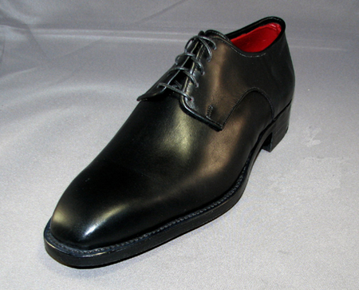
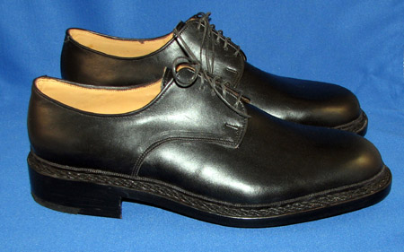
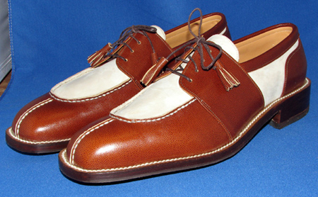


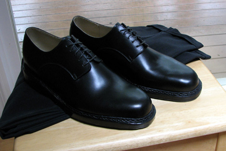
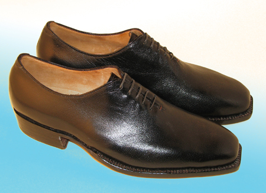
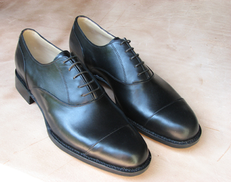
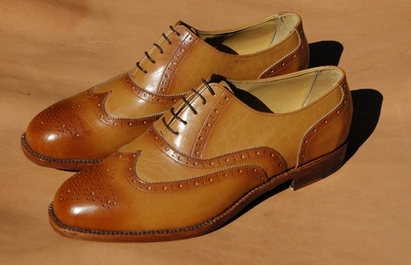
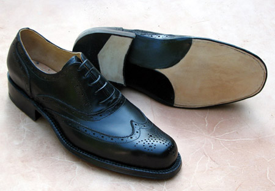
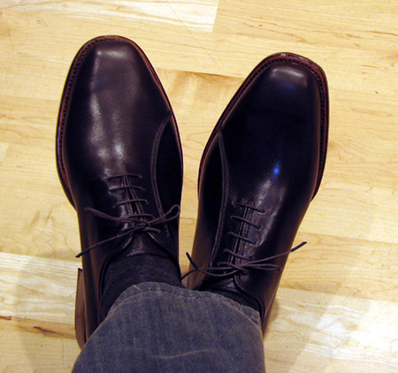